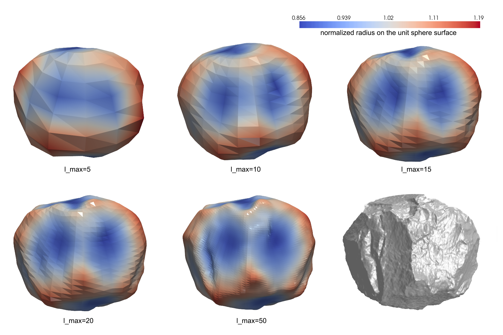
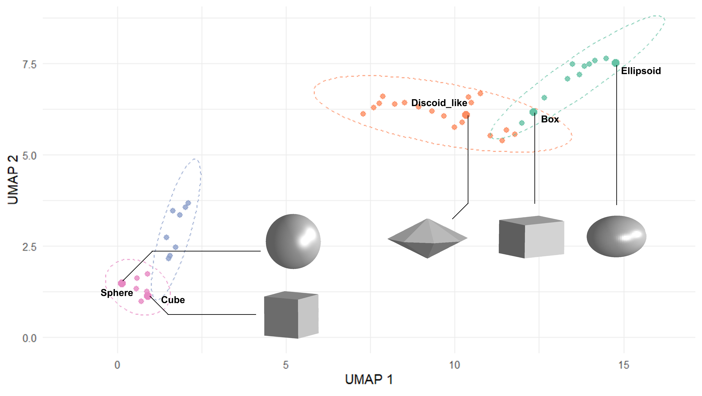
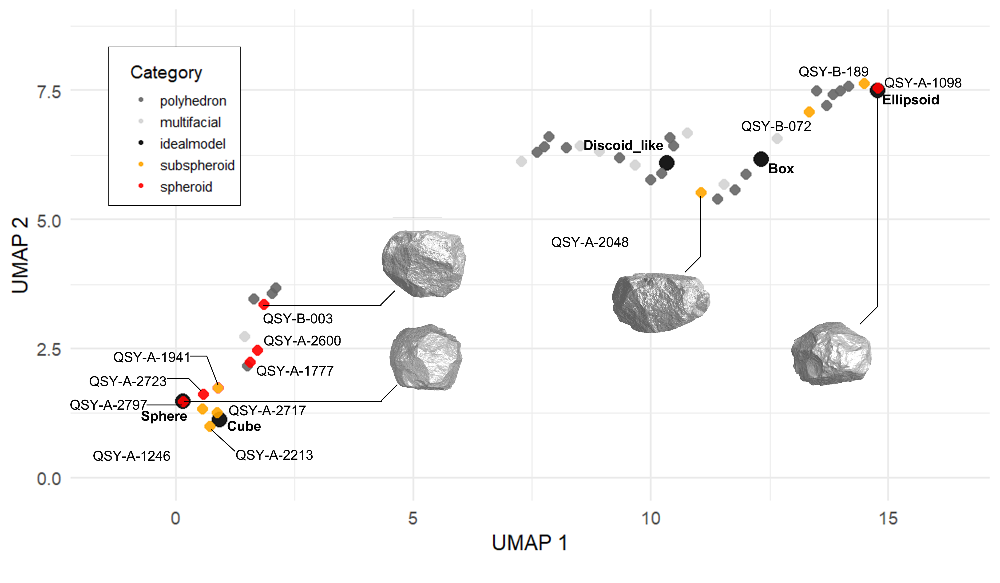
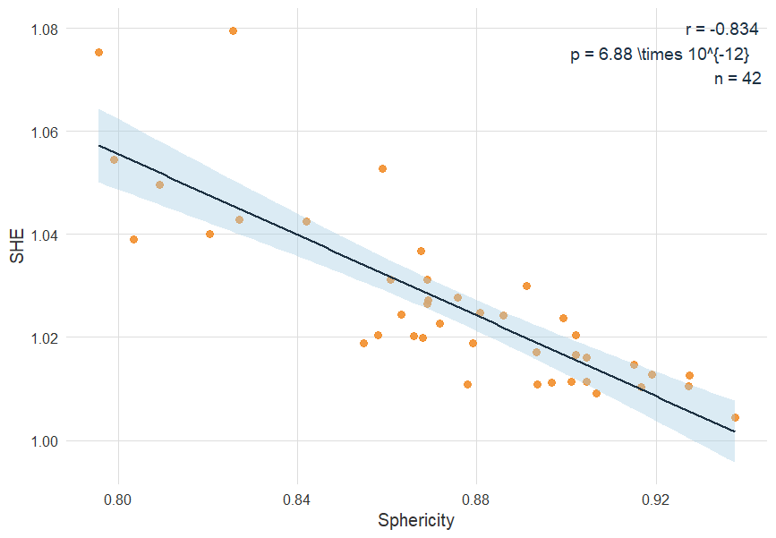
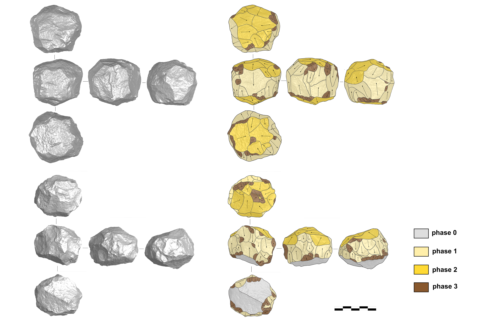
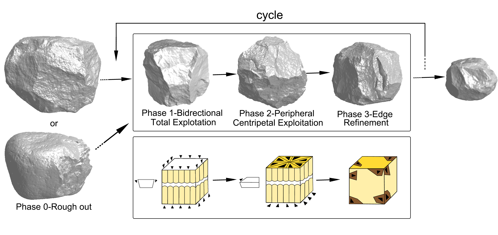
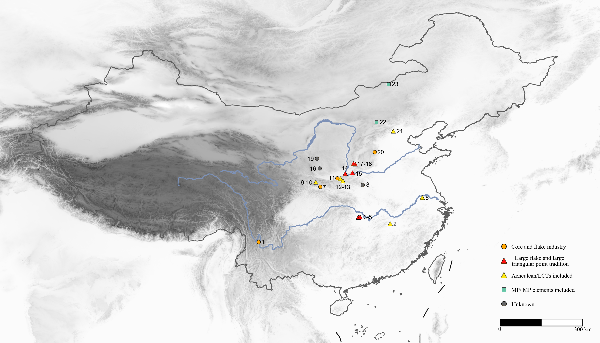

Shaping strategies and standardisation of faceted spheroids from Qianshangying (North China)
Abstract
Text of abstract
Keywords
keyword 1; keyword 2; keyword 3
Keywords: keyword 1; keyword 2; keyword 3
Highlights: These are the highlights.
Introduction
Spheroids are a widely distributed type of stone artifact, appearing across a broad temporal and geographic range—from the Oldowan and Acheulean to the Middle Paleolithic—and in diverse archaeological assemblages.(Willoughby 1985; Cabanès et al. 2024).
Early descriptions of spheroids were provided by (Clark 1955) and (Kleindienst 1962), and (Leakey 1971) later formally introduced the term spheroid, alongside polyhedron and bola, in his classification of the Developed Oldowan. Leakey’s definition of spheroids remains a widely cited typological standard: spheroids are rounded lithic objects whose entire surface is covered with flake scars, while subspheroids are generally less symmetrical and may retain portions of the original cortex. Compared to spheroids, polyhedrons are characterized by multiple intersecting flake removals, producing a distinctly angular morphology; bolas exhibit smoother and more rounded surfaces with no visible crests (Leakey 1971; Titton et al. 2020; De Weyer 2017).
Although these artifact types are frequently grouped under the category “PSB” of Polyhedron, Spheroid and Bolas (or “PSSB” when subspheroids are included) and are commonly interpreted as volumetrically reduced artifacts organized around a central point, this morphology-based classification has led to several interpretive challenges. Artifacts identified as spheroids in one study may be classified as bolas or attributed to entirely different technological categories in another. Furthermore, research has shown that these forms may not represent a unified chaîne opératoire : differences in raw material selection suggest divergent technological strategies and potentially distinct functional purposes (De Weyer 2017; Jones et al. 1994).
At present, the technological category and function of spheroids remain central topics of debate. Broadly, spheroids have been interpreted as hammerstones (Mussi 2025; Schick and Toth 1994), cores (Sahnouni, Schick, and Toth 1997), or projectiles (Leakey 1979). Closely tied to this debate is the question of their production strategy, which remains unclear. Experimental replication and site-specific diacritical analyses have produced divergent interpretations. One view suggests that spheroids emerged unintentionally as the by-products of core exhaustion, which represents a low-effort strategy aimed at flake production (Sahnouni, Schick, and Toth 1997). Another perspective holds that spheroids were naturally produced through high-intensity battering (Schick and Toth 1994); [@mora2005]; (Clark 1955). In contrast, a third view proposes that spheroids reflect a conceptual template and were produced through a deliberate shaping strategy (Titton et al. 2020; Muller et al. 2023; Texier and Roche 2014). [BM: yes, this is great, good job, this is a very important paragraph for the introduction of the paper. We might need to expand it a bit]
Rather than reflecting a single functional or technological model, these varying interpretations may instead capture regional variability shaped by differences in raw materials, morphologies, and reduction strategies. As (Cabanès et al. 2024) said, spheroids may not represent a homogenous category. [BM: you have already mentioned debates in the previous paragraph, so it’s seems a bit odd to mention debates again here without continuity with the previous paragraph. Maybe these two sentences are better as the opening sentences for the paper, setting the scene for more information about the debates] This highlights the need to move beyond generalized typological categories and instead engage more directly with local contexts and specific assemblages. Site-specific studies are therefore essential for reconstructing the spatial and temporal distribution of spheroids, as well as for identifying their distinct technological traits and functions.
In this study, we analyzed material from the Middle Pleistocene Qianshangying site (QSY) in northern China. Among an assemblage previously classified as a simple core-flake industry, we identified a group of highly standardized spheroids and subspheroids. we observed notable differences between these artifacts and multifacial cores or polyhedrons, which are stone artifacts through typical flaking strategies. Our goal was to evaluate whether these spheroids exhibited standardized morphology and production patterns, and whether their tendency toward spherical form resulted from deliberate and systematic reduction processes. based on the results, further to answer the question of whether the concept and manufacture of these spheroids represent a distinct technological tradition, separate from conventional flake-based strategies.
We conducted quantitative morphological and technological analyses of the spheroids recovered from the Qianshangying (QSY) site, including the novel application of spherical harmonic analysis to a Paleolithic assemblage from East Asia. These analyses help clarify the technological strategy behind spheroid production at QSY, within the broader context of Middle Pleistocene lithic practices in northern China.
Context of QSY and its spheroids
QSY lies in the Nihewan Basin, a region in northern China situated between the Chinese Loess Plateau and the Inner Mongolian Plateau. The basin preserves extensive Quaternary fluvio-lacustrine and loess deposits (R. Li et al. 2000; Yuan et al. 2009), hosts the highest concentrations of Pleistocene Paleolithic sites in East Asia, and is especially significant for preserving evidence of early hominin activities outside Africa dating back over one million years (Yang et al. 2020, 2017; Pei et al. 2019, 2017; Zhu et al. 2001, 2004). In recent years, nearly 20 Middle Pleistocene sites—including Jijiazhuang and Caijiagou—have been identified in the southeastern part of the basin (Yuwei et al. 2023; Ye et al. 2024), within the Yuxian Sub-basin, thereby completing the regional cultural sequence of the Nihewan Basin (Figure 1).
The QSY site complex consists of four localities from QSY-A to QSY-D, discovered in 2015. It is among the region’s most artifact-rich archaeological site. Geomorphological and sedimentological evidence indicates that the stratigraphy at the site records a full cycle of lake expansion, retreat, re-expansion, and eventually disappearance of the ancient Nihewan lake, and hominin occupation occurred in a marginal lacustrine setting during a low lake-level episode [BM: citation needed]. The stratigraphic context of QSY indicates a short-term occupation resulting from a single hominin activity event. The assemblage appears to be largely in situ, exhibiting minimal disturbance after deposition and well-preserved patterns of technological combination. ESR dating of the cultural layer places hominin activity at approximately 429 ± 39 ka [BM: citation needed].
A total of 955 stone artifacts were recovered from four localities at the QSY site. Following a widely used techno-typological framework [G. L. Isaac (1981); G. L. Isaac (1986); De La Torre (2004); Torre and Mora (2018); @pei2017], the assemblage was classified into four general categories: flaked pieces (n = 247, 26.0%), detached pieces (n = 686, 71.8%), pounded pieces (n = 4, 0.4%), and unmodified materials (n = 17, 1.8%). [BM: is it possible to use inline R code for these numbers?] Among these, 12 spheroids and subspheroids were identified, accounting for 1.3% of the total lithic assemblage.
Raw materials at QSY were classified into four categories following Pei and Hou (2002) and Pei et al. (2017): lava, siliceous dolomite, chert, and others. Lava rock dominates the assemblage (n=637, 66.7%), followed by siliceous dolomite (n=209, 21.9%), with chert and other materials comprising the remainder (n=53, 5.5% and n=56, 5.9% respectively). It seems that spheroids show no strong raw material preference. Of the 12 identified spheroids, 75.0% are lava (n = 9), 16.7% are siliceous dolomite (n = 2), and 8.3% is quartzite (n=1, classified under “other”), roughly mirroring the assemblage’s overall composition except for the absence of chert. However, when compared to cores, which are 66.0% lava (n = 62), 22.3% siliceous dolomite (n = 21), 4.3% chert (n = 4), and 7.4% other (n = 7), spheroids show a higher frequency of lava use, suggesting the different preferences in raw material selection for the spheroids and the cores. (pie chart in need?)

In terms of dimensions, the average length, width, thickness, and weight of spheroids were 82.9 mm (SD = 37.3), 70.1 mm (SD = 24.4), 61.2 mm (SD = 22), and 634.4 g (SD = 758.9), respectively, as shown in Figure 2. Two spheroids showed outlier values in size, being either unusually large or small, while the rest exhibited relatively concentrated size distributions. In contrast, cores displayed greater variability in size, with standard deviations of 29.8 mm, 24.2 mm, and 20.3 mm for length, width, and thickness, respectively. The polyhedrons and multifacial cores showed less variation than the overall core group, but their dimensional variability remained substantially greater than that of the spheroids.Additionally, spheroids tend to have similar values across length, width, and thickness, reflecting their overall symmetry. In contrast, cores, including polyhedrons and multifacial cores show marked differences among these dimensions, indicating more irregular and elongated forms.
Method
In this study, the 3d models of the cores were collected and used for morphometric and technological analysis. Digital data were captured using Artec Spider, and post-processing was carried out with Artec Studio [version number]. The 3D scan files and all the R and Python code used in the analyses reported here are openly available online at https://doi.org/xxxx/xxxx/./xxxx/.
Morphometric Analysis
Based on typological study, we identify some faceted sub-spheroids/spheroids in QSY site. To minimize subjective judgment inherent in typological classifications—particularly in distinguishing spheroids from stone cores—we applied quantitative methods to evaluate the degree of difference between the archaeological spheroids and a perfect sphere. In addition to the spheroids, we included other multifacial cores and polyhedrons in the morphological study to explore whether they can be distinguished from the spheroids.
These quantitative methods included computing the sphericity index, 3D spherical harmonics, spherical harmonic energy (SHE) and the centroid offset for each artifact. We also examined the degree of standardization of the spheroids by compulating coefficients of variation (Eerkens and Bettinger 2001; Muller and Clarkson 2023) of shape proxies. Furthermore, we compared the results of the typological and our new morphometric analyses to investigate the validity of the traditional typological approach.
Sphericity index
To evaluate the degree to which the artifacts approximate a perfect sphere, this study employs a standardized sphericity index originally proposed by Wadell (1935) and later adapted for 3D digital models in geoscientific research. The index is calculated using the following formula:
\[ \Psi = \frac{\pi^{1/3} (6V)^{2/3}}{A} \]
Where V is the volume and A is the surface area of the object. This dimensionless metric yields a maximum value of 1 for a perfect sphere. While values closer to 1 generally indicate a more spherical geometry, sphericity is calculated solely from volume and surface area. As a result, some irregular objects may exhibit high sphericity, while conversely, objects that are generally spherical in shape may deviate from ideal sphericity due to angular features or surface roughness. Thus, sphericity serves as a useful but limited proxy for assessing how close an object is to a perfect sphere. We used Python to derive surface area and volume measurements from 3D mesh models, and before that all models were decimated to a consistent face count and subjected to unit normalization to ensure comparability across artifacts.
3D spherical harmonics analysis
Spherical Harmonic (SPHARM) analysis is a method for describing 3D shapes using a series of mathematical functions defined on the surface of a sphere. It works like a 3D version of Fourier analysis, breaking down complex shapes into components of different spatial frequencies. Each shape is first mapped onto a unit sphere and then expressed as a combination of spherical harmonic functions \(Y_l^m(\theta, \phi)\). The shape is represented by a set of coefficients \(\hat{f}(l, m)\), which capture how much each function contributes. Here, θ and ϕ are angles in spherical coordinates, l and m are order and degree respectively. Lower-order terms describe the general shape, while higher-order terms capture finer details (Figure 3).
This method is widely used in the field of biology, such as the analysis of skull morphology and cell morphology (Link et al. 2024; Medyukhina et al. 2020; Harper, Goldstein, and Sylvester 2022; Hewitt et al. 2024; Grieb, Barbero-García, and Lerma 2022). However, there are currently very few application of SPHARM to archaeological artifacts (Muller et al. 2023; Noshita et al. 2025). Our work aims to demonstrate the usefulness of SPHARM for shape analysis of objects that are roughly spherical in shape, such as the spheroids and cores studied in this research.
We first imported, cleaned, and simplified the STL files of spheroids and cores to extract 3D mesh vertices, which were then converted from Cartesian (x, y, z) to spherical coordinates (r, θ, φ) (Link et al. 2024; Medyukhina et al. 2020). Next, we interpolated radial values onto a regular spherical grid and then decomposed them using spherical harmonics based on the Driscoll–Healy sampling scheme (Link et al. 2024; Medyukhina et al. 2020). The resulting coefficients were normalized for scale-invariant comparison across models.
From the normalized spherical harmonic coefficients, we computed the rotation-invariant power spectrum by summing the squared magnitudes of the coefficients at each degree. Each 3D shape is thus represented by its unique power spectrum, which serves as a multidimensional descriptor. To explore variation between models, we applied UMAP for dimensionality reduction and visualization (Bavel, Thiels, and Jelier 2023).All these were conducted in python.
This study represents the first attempt in archaeology to apply SPHARM for the classification of spheroids and cores. Specifically, we included a set of standard geometric models—such as sphere, rounded cube, ellipsoid (1.2:1:0.8) and box (1.2:1:1), and disc-like (flattened, and like discoid core)—in the SPHARM analysis and UMAP. Spheroids and cores were positioned in this position based on their morphological similarity to these reference models: individuals that cluster more closely to a specific standard form exhibit corresponding shape characteristics.
Spherical Harmonic Energy
Additionally, we computed the spherical harmonic energy (SHE), defined as the sum of squared normalized spherical harmonic coefficients for each degree. This provides a rotation-invariant measure of shape complexity across spatial frequencies. For normalized shapes, this total energy approaches 1 for a perfect sphere, while more irregular forms yield higher values.
Notably, classic sphericity metrics (Wadell 1935) exhibit critical limitations in differentiating morphotypes with equivalent surface-area-to-volume ratios. SHE overcomes this constraint through spherical harmonic decomposition of surface morphology, and this allows it to distinguish localized irregularities (like core edge or concave) from global shape deviations (e.g., elongation) – differences that classic sphericity metrics often fail to capture.
We computed the total energy at degree 20, a resolution high enough to capture surface details. Lower energy values indicate more regular or rounded surfaces, while higher values reflect more irregular or angular geometries.
Centroid offset
We also used the distance between its centre of mass (CoM) and the centre of its bounding box (CoBB) as a measure of volumetric symmetry (Muller et al. 2023), which was computed in python. A perfect sphere will have its CoM and CoBB perfectly aligned, resulting in a zero offset. As the object becomes more irregular or asymmetric, this offset increases. For each 3D model, the CoBB is defined as the midpoint of the maximum orthogonal dimensions—length (y), width (x), and thickness (z)—of its minimum bounding box. The CoM, which approximates the true mass center for objects made of homogeneous materials, is computed by weighting each triangular face of the mesh by its surface area and normalizing the result. The distance between CoM and CoBB, normalized by the artifact’s volume, serves as a quantitative indicator of sphericity: lower values indicate more spherical forms.
Technological Analysis
To investigate the production strategies of spheroids in QSY, this part aims to determine whether these artifacts were intentionally shaped and whether their manufacture followed standardized procedures. Addressing this question is crucial for evaluating whether spheroids represent a distinct technological category, separate from exhausted cores.
Diacritical analysis
We applied diacritical analysis to reconstruct the reduction sequence based on superimposition relationships among scars on spheroids (Titton et al. 2020; Cabanès et al. 2024). This method enables the identification of scars order, allowing us to figure out the organization of removals. All spheroids, polyhedrons and multifacial cores are included in the analysis to assess whether removals organization differs systematically within these groups.
Following the reconstruction of reduction sequences, we adopted an inductive approach to infer exploitation models of spheroids—that is, the removal patterns and associated stages employed in a spheroid. Ideally, the goal is to reconstruct the complete chaîne opératoire of spheroids—from the selection of raw material and initial blank to the final product. If consistent patterns are observed, they may indicate shared reduction schemes or conceptual templates. Furthermore, we explore whether multifacial cores and polyhedrons may represent earlier stages in spheroid reduction sequences, contributing to understanding the technological relationship between these types.
Orientation analysis
To further investigate technological strategies, we incorporated orientation statistics as a complementary approach. This method derives from fabric analysis originally used in sedimentology and has since been adapted to study the arrangement of flake scars on lithic artifacts. We followed the protocol developed by Lin (2024), extracting scar vectors from each core and calculating eigenvalues to derive the isotropic ratio and elongation ratio, these steps were finished in Geomagic Wrap, Rhino8 and R.
Results are visualized using ternary plots to compare orientation statistics between spheroids and other core types. Based on our hypothesis, if spheroids were shaped following a consistent reduction sequence, they should exhibit similar and patterned orientation results. In contrast, if they merely represented exhausted cores, the orientation patterns would appear random and highly variable, similar to those of undirected polyhedron and multifacial cores.
Efficiency of shaping strategy
This section aims to investigate how the morphology of spheroids evolves during the reduction process. We hypothesize that, as reduction intensity increases, spheroids will progressively approximate a perfect sphere. This would indicate a high-efficiency shaping strategy, where each step is directed toward achieving a predefined morphological goal. To test this hypothesis, we established a set of quantitative indicators for reduction intensity and spheroid morphology.
Degree of reduction
To compute the degree of reduction we collected data on three metrics: scar number, removal ratio and scar density index (SDI). We measured scar number as total number of flake scars visible on the spheroid surface. Removal ratio was calculated as 1 minus cortex ratio, where the cortex ratio represents the proportion of cortical surface area to total surface area (Cabanès et al. 2024). We used the removal ratio instead of the traditional cortex ratio in order to maintain a positive correlation with other reduction intensity indicators. SDI is defined as the number of flake scars divided by the total 3D surface area, the SDI serves as a robust indicator of core reduction intensity, following Clarkson (2013). It has been demonstrated to effectively capture the dynamic nature of the reduction process. In all three metrics, higher values represent more advanced stages of reduction. Scar counts and surface area measurements were extracted using Geomagic Wrap.
Spheroid shape
We measured spheroid shape with four metrics: sphericity, and spherical harmonic energy (SHE), along with mean edge angle, mean surface curvature.
Higher mean edge angles suggest a more spherical geometry. Ten edge intersections were randomly sampled per spheroid. Angles were calculated following Titton et al. (2020) by constructing triangles at ridge intersections, extracting vertex coordinates in Geomagic Wrap, and computed angles from the coordinates using trigonometric functions in R.
Mean surface curvature is a proxy for surface roughness, and higher mean surface curvature indicates a smoother surface. We estimated local curvature using the k-nearest neighbors method to fit a best-fit plane at each vertex (Muller et al. 2023). The deviation between actual surface points and this fitted plane reflects surface roughness. The calculation steps were completed in Python.
Together, these four variables allowed us to assess whether more extensively reduced spheroids display more standardized, symmetrical, and regular morphologies—characteristics expected in deliberate shaping strategies. We conducted Spearman’s rank correlation analysis between two sets of variables—reduction intensity indicators and morphological attributes. This non-parametric method is appropriate for small sample sizes and data that do not follow a normal distribution. Spheroids and sub-spheroids from the QSY site were included in the analysis.
Results
Results of Morphometric analysis
| ID | Blank type | Blank morphology | Final morphology | Typology | typology by SPHARM | Sphericity | SPHARM power | Centroid offset | Cortex covered |
|---|---|---|---|---|---|---|---|---|---|
| QSY_A_0256 | Cobble | NA | Polyhedral | Polyhedron | Ellipsoid | 0.8658388 | 1.020296 | 1.571368 | NA |
| QSY_A_0562 | Nodule | NA | Cubical | Polyhedron | Discoid-like | 0.8269944 | 1.042784 | 1.490442 | NA |
| QSY_A_0570 | Cobble | NA | Cubical | Polyhedron | Discoid-like | 0.8255318 | 1.079571 | 1.282095 | NA |
| QSY_A_0576 | Flake | NA | Pyramidal | Multifacial | Discoid-like | 0.8091313 | 1.049576 | 2.104250 | NA |
| QSY_A_0579 | Nodule | NA | Pyramidal | Polyhedron | Box | 0.7988300 | 1.054399 | 1.161040 | NA |
| QSY_A_0680 | Nodule | NA | Pyramidal | Polyhedron | Box | 0.8032364 | 1.039023 | 1.285673 | NA |
| QSY_A_0682 | Cobble | NA | Polyhedral | Polyhedron | Rounded cube | 0.9166715 | 1.010390 | 6.530839 | NA |
| QSY_A_0699 | NA | NA | Cubical | Polyhedron | Box | 0.8807450 | 1.024810 | 2.363453 | NA |
| QSY_A_0700 | Cobble | NA | Pyramidal | Polyhedron | Rounded cube | 0.8933988 | 1.017122 | 1.039335 | Y |
| QSY_A_0702 | Cobble | NA | Pyramidal | Multifacial | Ellipsoid | 0.8419195 | 1.042415 | 6.912960 | Y |
| QSY_A_0735 | Cobble | NA | Pyramidal | Polyhedron | Rounded cube | 0.8678116 | 1.019932 | 2.539858 | NA |
| QSY_A_0938 | NA | NA | Pyramidal | Polyhedron | Box | 0.8690457 | 1.027144 | 4.001371 | NA |
| QSY_A_1098 | NA | NA | Rounded | Spheroid | Ellipsoid | 0.9191438 | 1.012857 | 1.016149 | NA |
| QSY_A_1111 | Nodule | NA | Pyramidal | Polyhedron | Ellipsoid | 0.8717981 | 1.022741 | 1.109560 | NA |
| QSY_A_1246 | Nodule | NA | Polyhedral | Subspheroid | Rounded cube | 0.8934587 | 1.010859 | 1.957580 | NA |
| QSY_A_1304 | Cobble | Cubical | Pyramidal | Multifacial | Rounded cube | 0.9274082 | 1.012530 | 3.038120 | Y |
| QSY_A_1307 | Nodule | NA | Cubical | Polyhedron | Discoid-like | 0.8675301 | 1.036793 | 3.550725 | NA |
| QSY_A_1333 | NA | NA | Cubical | Polyhedron | Box | 0.8606773 | 1.031251 | 2.519639 | NA |
| QSY_A_1517 | Flake | NA | Pyramidal | Multifacial | Discoid-like | 0.7955195 | 1.075345 | 3.171066 | NA |
| QSY_A_1584 | NA | NA | Pyramidal | Polyhedron | Rounded cube | 0.8547083 | 1.018949 | 7.942392 | NA |
| QSY_A_1777 | Cobble | NA | Rounded | Spheroid | Rounded cube | 0.8967779 | 1.011231 | 1.435167 | NA |
| QSY_A_1941 | Cobble | NA | Polyhedral | Subspheroid | Rounded cube | 0.9011202 | 1.011462 | 3.964506 | Y |
| QSY_A_2048 | Cobble | NA | Cubical | Subspheroid | Box | 0.8911406 | 1.030040 | 6.442905 | NA |
| QSY_A_2049 | Cobble | NA | Pyramidal | Multifacial | Box | 0.8688198 | 1.031176 | 1.426403 | Y |
| QSY_A_2213 | NA | NA | Polyhedral | Subspheroid | Rounded cube | 0.8779463 | 1.010787 | 3.005867 | NA |
| QSY_A_2381 | Cobble | Pyramidal | Pyramidal | Multifacial | Box | 0.8757082 | 1.027697 | 4.231788 | Y |
| QSY_A_2599 | Cobble | NA | Polyhedral | Polyhedron | Ellipsoid | 0.9021322 | 1.016534 | 4.845816 | Y |
| QSY_A_2600 | Cobble | NA | Rounded | Spheroid | Rounded cube | 0.9272417 | 1.010491 | 1.862968 | NA |
| QSY_A_2611 | Nodule | NA | Polyhedral | Multifacial | Box | 0.8203610 | 1.040002 | 1.144922 | Y |
| QSY_A_2717 | Cobble | NA | Polyhedral | Subspheroid | Rounded cube | 0.9045169 | 1.011386 | 3.637126 | NA |
| QSY_A_2723 | Cobble | NA | Rounded | Spheroid | Rounded cube | 0.9067064 | 1.009120 | 5.505126 | NA |
| QSY_A_2797 | NA | NA | Rounded | Spheroid | Sphere | 0.9376838 | 1.004382 | 2.950471 | NA |
| QSY_B_003 | Cobble | NA | Rounded | Spheroid | Rounded cube | 0.9151881 | 1.014738 | 3.890027 | NA |
| QSY_B_072 | Cobble | NA | Polyhedral | Subspheroid | Ellipsoid | 0.9021261 | 1.020418 | 2.564553 | Y |
| QSY_B_136 | Cobble | NA | Polyhedral | Polyhedron | Ellipsoid | 0.8791311 | 1.018891 | 1.867975 | NA |
| QSY_B_140 | Nodule | NA | Polyhedral | Polyhedron | Box | 0.8858050 | 1.024280 | 4.030924 | Y |
| QSY_B_159 | Cobble | NA | Pyramidal | Multifacial | Box | 0.8631108 | 1.024487 | 4.939933 | Y |
| QSY_B_168 | Cobble | NA | Cubical | Polyhedron | Box | 0.8992439 | 1.023644 | 3.083931 | NA |
| QSY_B_186 | Nodule | NA | Polyhedral | Polyhedron | Box | 0.8688678 | 1.026525 | 2.674256 | NA |
| QSY_B_189 | Cobble | NA | Cubical | Subspheroid | Ellipsoid | 0.9045078 | 1.016141 | 2.324629 | NA |
| QSY_B_320 | Cobble | NA | Cubical | Polyhedron | Discoid-like | 0.8589857 | 1.052747 | 1.606183 | NA |
| QSY_B_435 | Nodule | Cubical | Cubical | Polyhedron | Ellipsoid | 0.8578307 | 1.020420 | 2.279425 | Y |




We applied spherical sphericity index, harmonics analysis, and centroid offset measurements to both the spheroids (n = 42) and all other multifacial and polyhedron cores (n = 29) in the assemblage of QSY. These analyses aim to assess whether spheroids are morphologically distinct from other cores, and whether they exhibit standardized shapes—an essential criterion for evaluating the existence of deliberate shaping strategies and a goal product. In addition, we compare quantitative outcomes with traditional typological classifications to assess their consistency. We present a summary table listing each core’s blank morphology and type, final morphology, and cortex coverage here in Table 1.
Sphericity analysis reveals a clear difference between spheroids and multifacial cores/polyhedra. The mean sphericity of spheroids (0.906) is notably higher than that of multifacial cores and polyhedron (0.861), with a Mann-Whitney U test yielding U = 37, p = \(3.99 \times 10^{-5}\). This result indicates that spheroids possess a more spherical geometry overall, supporting their typological classification.
We conducted shape analysis based on spherical harmonic decomposition, setting the maximum degree to 20 (lmax=20,Figure 3). This choice ensures that sufficient geometric detail is captured while avoiding high-frequency noise and overfitting artifacts such as the Gibbs phenomenon. After normalization, all models have their degree 0 (l=0) coefficient set to 1, allowing for meaningful comparison across different models.
A Variance Analysis was performed on the power of each harmonic degree. The results indicate that l= 2 and l=3 exhibit the highest variance across the sample, suggesting that these low-order terms capture the most significant shape variation. Specifically, l=2 reflects global asymmetries—such as elongation or flattening—while degree 3 is more sensitive to localized features like curvature and edge protrusions.
To visualize the structure of shape variation, we applied UMAP to the normalized power spectrum. The UMAP projection reveals distinct clusters in the first two dimensions of the shape space. These clusters correspond to reference models, sphere, rounded cube, ellipsoid, box and disc-shaped core (Figure 4). This demonstrates that these cores occupy distinguishable regions in the harmonic shape space, with proximity to the sphere or elongation/flattening along specific axes emerging as key differentiating features. Most artifacts typologically classified as spheroids or sub-spheroids were grouped into the “sphere” , “cube” and “ellipsoid” clusters, indicating their consistent, near-spherical shapes (Figure 5). However, some Multifacial cores and Polyhedron also appeared in the near-spherical region. This can be attributed to their high cortex coverage or limited flake removals, which likely preserved their originally rounded forms and led to their grouping alongside more intentionally shaped spheroids.
We then tested whether the UMAP-based groupings also correspond to differences in sphericity using a Kruskal–Wallis test, which yielded \(\chi^2\) = 18.65, df = 3, p = \(3.23 \times 10^{-4}\). The result shows statistically significant differences in sphericity among the shape clusters, further supporting the effectiveness of the spherical harmonic approach in capturing meaningful morphological variation (Figure 6).
The spherical harmonic energy (SHE), a novel metric introduced herein, quantifies the geometric approximation of core morphology to an ideal sphere. Normalized SHE approaching unity indicates progressively spherical configurations, while deviations from unity reflect morphological irregularity. Our analysis demonstrates significant negative correlation between SHE and classic sphericity measures (r = -0.83, df = 40, p = \(6.88 \times 10^{-12}\))), validating its efficacy as a proxy of sphericity.
Statistical comparisons reveal distinct SHE distributions between morphological classes: spheroids and sub-spheroids exhibit mean SHE = 1.013 (SD = 0.006), whereas multifacial cores and polyhedron demonstrate significantly higher irregularity (mean SHE = 1.032, SD = 0.017). The Kruskal-Wallis test confirms robust inter-group divergence (\(\chi^2\) = 19.11, df = 3, p = \(2.60 \times 10^{-4}\)), proving the distinguishability of spheroids in QSY.
The pursuit of a standardized spherical form among spheroids is further supported by our findings. Using the Coefficient of Variation (CV)—defined as the sample standard deviation divided by the sample mean—we assessed the consistency of sphericity within the spheroids. Eerkens and Bettinger (2001) suggested that a CV of under 1.7% (0.017) is a realistic threshold for manually-produced archaeological artifacts. Both sphericity and SHE values yielded low CVs (0.017 and 0.006, respectively), indicating that sub/spheroids maintain a highly standardized rounded shape. In contrast, multifacial cores combined with polyhedron has a higher CV of 0.039 and 0.017 respectively.
Results of technological analysis
The diacritical analysis of spheroid surfaces reveals a structured and recurrent reduction sequence comprising the following phases (Figure 8). Phase 1 was a unidirectional or bidirectional total exploitation, belonging to one kind of volume exploitation. Large and flat surfaces of the cobble were selected as platforms for striking toward the opposite surface. Knapping proceeded until the peripheral volume was fully exploited, resulting in an approximately cubic form. Phase 2 was peripheral centripetal exploitation. In this phase, previous removals in phase 1 serve as platforms for centripetal flaking around the core periphery. This represents a surface exploitation strategy. A notable feature is the angle between the face’s ventral surface and platform (i.e. core edge angle), which often exceeds 90°, forming a secant plan [citation] rather than parallel plan. This phase contributes significantly to the increasingly spherical shape of the artefact. Phase 3 was the production of small scars on ridges or intersections of previous flake scars, resulting in a rounding and smoother surface, further enhancing sphericality. It is important to note that due to the high degree of reduction intensity observed in most spheroids, phases prior to the visible sequence were often obliterated. We hypothesize the existence of a Phase 0, potentially involving roughing-out of the cobble or an earlier cycle of Phases 1–3.
Scar orientation analysis further supports the interpretation of a systematic reduction sequence in the production of QSY spheroids. Figure 7 shows that spheroids tend to cluster together, with elongation ratios ranging from 0.403 to 0.637 and isotropy ratios from 0.164 to 0.497. These elongation ratios suggest that the spheroids underwent unidirectional or bidirectional total exploitation, typical of Phase 1, resulting in relatively high elongation values. In addition, the peripheral centripetal exploitation, namely Phase 2, appears to have contributed to a certain degree of isotropy in scar arrangement—higher isotropy ratios are associated with more spherical shapes. Subspheroids exhibit greater variability in both elongation and isotropy ratios, indicating less consistent reduction intensity.
Multifacial cores and polyhedrons display a wide and dispersed distribution in the ternary plot, without forming any distinctive cluster. Their scar patterns show considerable variability in both elongation and isotropy, reinforcing the interpretation that these cores lack removal organization and reflect a SSDA. Multifacial cores typically exploit natural angles with core rotation occurring without a predetermined plan, which belongs to an opportunistic flaking strategy, while polyhedrons—despite showing a higher degree of reduction—follow a similarly unstructured sequence. This distinction highlights the fundamental technological difference between polyhedrons and spheroids at QSY, where they used to be considered as a continuous reduction process: polyhedrons represent exhausted cores, whereas spheroids reflect the presence of a conceptual template and systematic reduction plan.



Efficiency of shaping strategy
| ID | Scar number | Removal ratio | SDI | Edge angle mean | Curvature | Sphericity | SPHARM power |
|---|---|---|---|---|---|---|---|
| QSY_A_1098 | 29 | 0.973 | 0.003 | 128.338 | 7.998 | 0.919 | 1.013 |
| QSY_A_1246 | 31 | 0.921 | 0.003 | 123.936 | 8.090 | 0.893 | 1.011 |
| QSY_A_1777 | 14 | 0.927 | 0.005 | 122.208 | 7.979 | 0.897 | 1.011 |
| QSY_A_1941 | 8 | 0.681 | 0.001 | 109.423 | 9.902 | 0.901 | 1.011 |
| QSY_A_2048 | 22 | 0.851 | 0.000 | 118.574 | 8.133 | 0.891 | 1.030 |
| QSY_A_2213 | 26 | 0.922 | 0.002 | 114.985 | 8.873 | 0.878 | 1.011 |
| QSY_A_2600 | 22 | 0.852 | 0.001 | 124.385 | 7.145 | 0.927 | 1.010 |
| QSY_A_2717 | 20 | 0.860 | 0.001 | 122.426 | 8.954 | 0.905 | 1.011 |
| QSY_A_2723 | 27 | 0.918 | 0.001 | 134.926 | 8.275 | 0.907 | 1.009 |
| QSY_A_2797 | 28 | 0.960 | 0.002 | 135.403 | 7.453 | 0.938 | 1.004 |
| QSY_B_003 | 14 | 0.647 | 0.000 | 120.931 | 6.750 | 0.915 | 1.015 |
| QSY_B_072 | 4 | 0.623 | 0.000 | 115.484 | 8.008 | 0.902 | 1.020 |
| QSY_B_189 | 15 | 0.782 | 0.001 | 117.941 | 7.626 | 0.905 | 1.016 |

Figure 10 shows significant positive correlations among the three variables representing reduction intensity: scar number, removal ratio, and SDI. Among them, scar counts show significant positive correlations with both removal ratio (ρ = 0.74, p = \(3.56 \times 10^{-3}\)) and SDI (ρ = 0.64, p = \(1.87 \times 10^{-2}\)). Removal ratio and SDI exhibit a stronger and more highly significant correlation (ρ = 0.89, p = \(4.57 \times 10^{-5}\)). These two variables incorporate surface area in their calculation, making them more effective in capturing the density and intensity of reduction, and therefore more reliable indicators of the shaping process in spheroids.
Among the shape descriptors of spheroids, several significant correlations were observed. Mean edge angle was positively correlated with sphericity (ρ = 0.68, p = \(1.12 \times 10^{-2}\)) and negatively correlated with SPHARM power (ρ = -0.59, p = \(3.46 \times 10^{-2}\)), indicating that greater edge angles are associated with more spherical and regular forms. As noted in previous studies, mean edge angle is a key variable in capturing the morphology of spheroids [citation]. This correlation between edge angle and sphericity may help explain why spheroids were often interpreted as exhausted cores in earlier research [citation]. Indeed, spheroids must be significantly reduced, as achieving a near-perfect spherical shape typically results in increased edge angles, making further flake removal difficult. However, the reverse is not necessarily true—not all exhausted cores evolve into spheroids.
Curvature was only significantly correlated with sphericity (ρ = -0.59, p = \(3.46 \times 10^{-2}\)), suggesting that smoother surfaces tend to approximate spheres more closely. Its lack of correlation with other variables may reflect its focus on local surface texture, while edge angle and SPHARM power capture broader aspects of shape regularity and symmetry. The weak correlation between sphericity and SPHARM power may result from the small sample size or their different sensitivities: sphericity, based on area and volume, tolerates surface variation, while SPHARM power responds more to asymmetry and surface irregularity. Thus, even in similarly spherical specimens, surface differences can produce substantial variation in SPHARM power. The analysis of spheroid shape variables indicates that mean edge angle, curvature, sphericity, and SPHARM power each capture distinct aspects of spheroid morphology, which explains the varying strengths of correlation observed among them.
Discussion
Do Qianshangying Spheroids represent of a Shaping Strategy?
According to the results of morphological and technological analysis, we can summarize the technical strategy employed in the production of faceted spheroids in QSY. This strategy consists of a series of sequential phases (Figure 9): a potential rough-out phase, volume exploitation aimed at forming a cubic shape, surface exploitation to approximate a spheroidal geometry, edge refinement, and potentially the repetition of earlier phases. The existence of a repetitive phase is supported by the observation that while the original cobble blanks in QSY display considerable size variation, the finished spheroids, although two of them are relatively large or small, mostly cluster around a diameter of 6–9 cm (Figure 2). This suggests that the production of spheroids may have involved multiple cycles of reduction, and further implies that a diameter of 6–9 cm was considered an optimal or intended size in the knapping process.
Therefore, it can be inferred that the QSY hominin deliberately employed a standardized production approach to create spheroids with consistent and formalized shapes. The technological strategy reflected in the QSY facted spheroids includes the use of conceptual template, standardized production, and the achievement of a target product, which together demonstrate that this was a shaping strategy. This stands in contrast to flaking strategies, where the primary objective is the removal of usable flakes or débitage rather than the shaping of a cobble into a predetermined morphology (Inizan, Reduron-Ballinger, and Roche 1999; Duke, Feibel, and Harmand 2021).
The origins of shaping strategies are most commonly linked to the Acheulean, particularly those exemplified by bifacial shaping strategies on handaxes (Glynn L. Isaac 1986). These strategies gradually became more refined, with mature bifacial shaping marked by the concept of bifacial symmetry, thinning and edge refinement, and the achievement of a standardized final shape (Beyene et al. 2013). Compared to flaking technology in Oldowan, these processes demand greater cognitive planning and precise manual control (Wynn 1995; Stout et al. 2015). Although the spheroids from QSY do not qualify as Large Cutting Tools (LCTs), nor does the site yield other typically Acheulean products, the faceted spheroids nonetheless exhibit a level of technological and morphological complexity comparable to that of LCTs. They also share key features, including a hierarchical and standardized reduction sequence and a high degree of symmetry and surface regularity in the final product.
These findings also contribute to the long-standing debate over the nature of spheroids—whether they should be interpreted as byproducts of flake production (exhausted cores), or as targeted end products of shaping strategies. In the case of QSY facted spheroids, the evidence strongly supports the latter. Faceted spheroids recovered from other Early Pleistocene sites in anBarranco Leo ́nd and ’Ubeidiya have also been reported to show evidence consistent with shaping strategy (Muller et al. 2023; Titton et al. 2020). These intentionally shaped spheroids appear contemporaneous with, or even predate, the emergence of Acheulean technology. It is important to note, however, that many spheroids from East Africa may not fall into this category. As noted by (Mora and De La Torre 2005), these quartz-based spheroids may have been produced through percussive techniques. They are often covered with battering marks, exhibit smoother surfaces, and lack ridges—features that suggest they may be better classified as bolas within a typological framework (Leakey 1971).
Another issue we aim to address is the relationship between polyhedrons, spheroids, and bolas. While no bolas were identified at the QSY site, our quantitative analyses clearly differentiate polyhedrons from spheroids. These two artifact types differ in size, morphology, and production sequence. Polyhedrons at QSY represent heavily reduced cores, whose edge angle increase results from extensive flake removal. Their primary purpose lies in producing flake, placing them within a flaking strategy. In contrast, spheroids were intentionally shaped as end products, reflecting a shaping strategy. These two technological approaches of flaking and shaping strategies coexisted at QSY, indicating a diversity of reduction goals.
However, we found that although the morphology and reduction technology of spheroids and polyhedrons can be clearly distinguished, spheroids in early phases may be difficult to differentiate from cores. In their initial phases of reduction, spheroids often resemble cores due to similar flake removal patterns. At this stage, they may be classified as cores, especially since the flakes produced during the initial shaping are themselves usable. However, it remains unclear whether this typological transformation was intentional or unplanned. In addition, the spheroids at QSY appear to have undergone another form of typological transformation—from hammerstones to spheroids. one specimen initially served as percussive tools but were later subjected to flake removal, suggesting a shift in function from battering to shaping.
The Technological and Typological Variability of Spheroids in China
| site | geographic location | geochronology | site type | industry type | number of spheroids/bolas | raw material | production technology | remarks |
|---|---|---|---|---|---|---|---|---|
| choushuihe | Lantian, Shanxi | survey-collected | open-air | core and flake industry | 1 | quartz | flaking | NA |
| zhoukoudian | beijing | early Middle Pleistocene | cave | core and flake industry, but LCTs included | 8 | quartz; quartzite; sandstone | battering on polyhedron | NA |
| kehe | ruicheng, shanxi | Middle Pleistocene | open-air | tradition of large flake and large triangular points | ＞3 | quartzite | flaking or pecking | resemble QSY |
| dingcun79:01/02 | xiangfen, shanxi | Middle Pleistocene | open-air | tradition of large flake and large triangular points | 4 | limestone; sandstone | flaking or pecking | NA |
| dingcun76:006/007/008; 79:05; 80:01 | xiangfen, shanxi | Late Pleistocene | open-air | tradition of large flake and large triangular points | 98 | limestone; diorite; quartzite; sandstone | flaking or pecking | resemble QSY |
| dingcun77:01 | xiangfen, shanxi | Late Pleistocene | open-air | LP-Microlithic | 10 | limestone; sandstone | flaking or pecking | NA |
| xigou | quwo, shanxi | survey-collected | open-air | tradition of large flake and large triangular points | 1 | limestone | flaking | NA |
| shuigou/huixinggou | sanmenxia, henan | Middle Pleistocene | open-air | tradition of large flake and large triangular points | 4 | lava; quartz; breccia | flaking | resemble QSY |
| xiaokongshan lower cave | nanzhao, henan | Unknown | cave | Unknown | 2 | quartzite | flaking | NA |
| zhangjiatan/xiangou | lixian, hunan | survey-collected | open-air | tradition of large flake and large triangular points | 9 | sandstone | flaking or pecking | NA |
| Deshan Second Brick Factory | changde, hunan | survey-collected | open-air | tradition of large flake and large triangular points | 2 | sandstone; dolomite | flaking | resemble QSY |
| huzhua Mount. | jinshi, hunan | survey-collected | open-air | tradition of large flake and large triangular points | 11 | sandstone | flaking or pecking | resemble QSY |
| fangniu Mount. | jurong, jiangsu | late Middle Pleistocene | open-air | LCTs included | 6 | sandstone; dolomite | flaking or pecking | NA |
| yaoshi basin | shangzhou, shanxi | late Middle Pleistocene | open-air | LCTs included | 3 | quartz | pecking after flaking | NA |
| shangdan basin | southern shanxi | late Middle Pleistocene | open-air | Achulean | 3 | quartz sandstone | flaking | NA |
| xujiayao1974 | yanggao, shanxi | late Middle Pleistocene | open-air | core and flake industry to MP | 14 | quartz; lava; quartzite; limestone | pecking | NA |
| xujiayao1976 | yanggao, shanxi | late Middle Pleistocene | open-air | core and flake industry to MP | 1059 | ? | ? | NA |
| xujiayao1977 | yanggao, shanxi | late Middle Pleistocene | open-air | core and flake industry to MP | 32 | quartz; dolomite | flaking or pecking | NA |
| xujiayao2017- | yanggao, shanxi | late Middle Pleistocene | open-air | core and flake industry to MP | 23 | lava; quartz sandstone; granite | flaking or pecking | NA |
| longgangsi | hanzhong, shanxi | survey-collected | open-air | Achulean | 10 | quartz; quartzite; lava | pecking after flaking | NA |
| hejialiang | hanzhong, shanxi | 70-80ka | open-air | LCTs included | 10 | quartz; lava | flaking or pecking | NA |
| fanba | hanzhong, shanxi | 180-25ka | open-air | core and flake industry | 3 | quartz | pecking | NA |
| dangcheng | heshun, shanxi | Late Pleistocene | cave | core and flake industry | 11 | quartz | flaking or pecking | NA |
| hezhigou | jingchuan, gansu | Late Pleistocene | open-air | Unknown | 1 | quartzite | flaking | NA |
| liujiacha | huanxian, gansu | Late Pleistocene | open-air | Unknown | 21 | quartzite; dolomite | flaking | NA |
| liaohe river | anyi, anhui | Late Pleistocene | open-air | LCTs included | 2 | quartz | flaking | NA |
| mujiaqiao | lijiang, yunnan | Late Pleistocene | open-air | core and flake industry | 5 | limestone; quartz | flaking | resemble QSY |
| jinsitai | Dongwuzhumuqin Banner, Inner Mongolia | Late Pleistocene | cave | MP-Mousterian | 169 | lava; limestone; quartz | flaking | NA |
site data: 1. Mujiaqiao, (Wei, Huang, and Zhang 1984); 2. Liaohe river region, (C. Li and Xu 1991); 3. Deshan Second Brick factory, (Xi 1994); 4. Zhangjiatan, (Lixian County Museum 1992); 5. Huzhua Mount., (Tan 1999); 6. Fangniu Mount., (Fang et al. 2002); 7. Fanba, (Xia et al. 2022); 8. Xiaokongshan, (Xiaokongshan Joint Excavation Team 1988); 9. Hejialiang, (S. Wang et al. 2014); 10. Longgangsi, (N. Lu, Chinese Academy of Sciences, and Hou 2006); 11. Shangdan basin, (S. Wang et al. 2013); 12. Yaoshi basin, (S. Wang and Hu 2000); 13. Choushuihe, (Dai and Xu 1973); 14. Kehe, (Jia 1962); 15. Shuigou, (Huang 1964); 16. Hezhigou, (Liu, Huang, and Lin 1984); 17. Xigou, (Jia 1959); 18. Dingcun, (Shanxi Provincial Institute of Archaeology 2014; Tao et al. 1984); 19. Liujiacha, (Xie 1982); 20. Dangcheng, (Wu and Sun 1989) ; 21. Zhoukoudian Loc.1, (Nanjing Institute of Geology and Palaeontology, Chinese Academy of Sciences 1985); 22. Xujiayao, (Jia and Wei 1976; Jia, Wei, and Li 1979; Ma, Pei, and Gao 2011; F. Wang 2016)); 23. Jinsitai, (X. Wang et al. 2010)

In China, spheroids constitute a technological category with broad temporal and spatial distribution (Yi, Gao, and Pei 2012), as shown in Figure 11. In addition to the one spheroid collected near the Gongwangling site in Shanxi (Dai and Xu 1973), the earliest dated spheroids originate from Zhoukoudian Locality 1 (Nanjing Institute of Geology and Palaeontology, Chinese Academy of Sciences 1985), attributed to the early Middle Pleistocene. In terms of geographic range, the southernmost and westernmost occurrences of spheroids are found at the Mujiaqiao site in Yunnan (Wei, Huang, and Zhang 1984), while the northernmost spheroids come from the Jinsitai site in Inner Mongolia (X. Wang et al. 2010). The widespread occurrence of spheroids across time and space may indicate their role as a generalized or multipurpose tool within Pleistocene contexts, capable of serving diverse functions in varying ecological and cultural settings.
Over 1522 spheroids have been identified across more than 23 archaeological sites or localities in China. However, that many of these findings derive from surface surveys rather than systematic excavations, and the recovered quantities are often limited. Thus, the number of spheroids per site varies considerably: 19 sites have yielded fewer than ten specimens each. By contrast, three sites—Xujiayao, Dingcun, and Jinsitai—have produced substantial assemblages, each exceeding 100 spheroids (F. Wang 2016; X. Wang et al. 2010; Shanxi Provincial Institute of Archaeology 2014). Notably, the Xujiayao site alone has yielded over 1,000 specimens (F. Wang 2016).
The raw materials used for spheroids at these archaeological sites primarily include quartz, quartzite, sandstone, and limestone, with occasional occurrences of lava and dolomite at a few localities. Among these, quartz and quartzite are the most widely used materials, found at 18 sites across China. In contrast, spheroids made of sandstone and limestone are mainly concentrated at sites distributed along the Fen River and Li River basins in Central China. Previous researches have observed that the morphological characteristics of spheroids are influenced by the physical properties of the raw materials (Tao et al. 1984). For example, at the Dingcun site, spheroids made from quartz tend to be irregular and angular, possibly due to the fragile nature of quartz. In comparison, those made from softer materials such as limestone and sandstone are generally more rounded and smoother, with flake scars that appear more diffuse or less distinct (Tao et al. 1984).
Three primary techniques have been identified in the manufacture of spheroids: flaking, involving the removal of flakes to shape the object (e.g., Mujiaqiao, (Wei, Huang, and Zhang 1984)); pecking, where two blanks are struck together to round off edges—sometimes by splitting a cobble and using the halves against each other (e.g., Dingcun, (Shanxi Provincial Institute of Archaeology 2014)); and battering, involving repeated percussion of a polyhedrons (e.g., Zhoukoudian, (Nanjing Institute of Geology and Palaeontology, Chinese Academy of Sciences 1985)). Experimental studies suggest that pecking and battering yield similar efficiency and spheroid form (L. Lu, Dong, and Chen 2021). Many sites, such as Xujiayao and Dingcun, show evidence of multiple techniques, including combined or sequential methods like pecking after flaking to improve sphericity (Tao et al. 1984; Nanjing Institute of Geology and Palaeontology, Chinese Academy of Sciences 1985). No clear relationship has yet been established between raw material types and specific production methods.
At Dingcun and Mujiaqiao, thick, flat cobbles were selected and shaped through peripheral flaking, producing roughly approximately cubic shape (Wei, Huang, and Zhang 1984; Tao et al. 1984). Mujiaqiao specimens retain parts of the cortex, while at Dingcun, flakes with large exterior and small interior platform angles were removed from spheroid blank to increase edge angles and enhance sphericity (Tao et al. 1984; Wei, Huang, and Zhang 1984). Of the six sites exhibiting similar strategies to QSY spehroids, all but Mujiaqiao are located within the Fen River and Lishui River regions. These sites are grouped into the Keheng–Dingcun techno-complexes and Lishui techno-complexes, characterized by large flakes and large triangular points (Lixian County Museum 1992; Tan 1999; Fang et al. 2002; Shanxi Provincial Institute of Archaeology 2014; Jia 1962). The large triangular points were produced by striking the dorsal surface of large flakes to concentrate edges at the tip, creating triangular outlines and steep cross-sections—indicative of a deliberate shaping strategy. This is a significant observation, as it implies that spheroid production techniques similar to those at QSY are more frequently associated with lithic assemblages characterized by intentional shaping strategies.
From the perspective of lithic industries represented at spheroid-bearing sites, faceted spheroids are found in both core and flake industry and Middle Paleolithic sites. However, they occur most frequently in Acheulean industries and in traditions of large flake and large triangular point (S. Wang et al. 2014, 2013; N. Lu, Chinese Academy of Sciences, and Hou 2006; S. Wang and Hu 2000), both of which are marked by deliberate shaping strategies (Figure 11). Notably, even sites previously classified as belonging to simple core and flake industries or Mode 1, such as Xujiayao, demonstrate technological capacities that surpass the typical expectations of Mode 1 (F. Wang 2016).
It should be emphasized, however, that we do not intend to imply a direct association between faceted spheroids and Mode 2 or the Acheulean technology. Rather, we argue that faceted spheroids reflect a complex shaping strategy. Their presence within Acheulean contexts is understandable, as spheroids and LCTs share certain core technological features(Leakey 1971; Cabanès et al. 2024; Glynn L. Isaac 1986). When faceted spheroids appear in more rudimentary industries or assemblages, it suggests that conceptual templates and advanced technological capacities were already present within those contexts.
This pattern aligns with spheroid findings in other regions of the world. Early examples of spheroids have been identified in various lithic assemblages across Africa, Europe, the Levant, and Asia, where the associated techno-complexes are generally attributed to either the Acheulean or the Oldowan. Spheroids appear in what is considered the Late Oldowan, if a chronological boundary is set at 2.0 Ma to distinguish between Early and Late Oldowan (Gallotti, Mussi, et al. 2018). The growing recognition of technological diversity within the Oldowan has led to a broader consensus that the Late Oldowan includes signs of innovation, such as more complex flaking patterns and decreased morphological variability in flakes (Gallotti, Mussi, et al. 2018; Braun et al. 2019). Spheroids, we propose here, may represent one of the key indicators of this increasing technological complexity during the Late Oldowan (Titton et al. 2020). In particular, faceted spheroids, which reflect a deliberate shaping strategy, may indicate a level of technical skill approaching that of the earliest Acheulean—or perhaps even foreshadowing their emergence.
Conclusion
This study provides one of the earliest systematic analyses focused on spheroids from northern China. By applying a range of quantitative methods, we conducted an integrated morphological and technological study of the QSY spheroids. Our results demonstrate that these spheroids were produced through a programmed reduction strategy aimed at achieving standardized spherical forms, primarily using hard-hammer direct percussion. The evidence of shaping strategies on QSY spheroids confirms that they were intentionally made tools with conceptual template rather than exhausted cores. This distinguishes them from polyhedrons or multi-facial cores in their terminal reduction stages. Traditionally, lithic technology in northern China prior to the Late Pleistocene has been considered stagnant and generally classified as simple core-and-flake industries. However, the QSY assemblage from ~429ka clearly reveals a higher level of technological sophistication.
This paper also presents one of the first systematic overviews of the spatial and temporal distribution and technological variability of spheroids within China. We found that Chinese spheroids display considerable diversity in raw materials, production techniques, and morphology. Some assemblages contain spheroids that may be comparable to those from QSY and tend to appear within Acheulean or shaping-oriented techno-complexes, often dated later than QSY. This highlights the particular significance of the QSY spheroids. However, the current dataset remains limited, and many sites lack detailed morphological and technological studies of spheroids, hampering broader inferences about hominin technological behaviors. We therefore emphasize the need for site-specific analysis of spheroids in future research.
Our study employed multiple quantitative methods, including spherical harmonics, some of which are still relatively novel in lithic analysis. These approaches offer useful tools for in-depth spheroid research. Given the limitations of traditional typology in capturing the functional, morphological, and technological variability of spheroids across sites, we argue that multiple method approaches are essential. From the perspective of typology, spheroids have often been dismissed as poor marker of hominin behavior due to their wide spatial and temporal distribution, combined with low-cost technologies, more refined studies increasingly reveal their diversity and potential as markers of homonin technological behavior (Titton et al. 2020; Vaquero and Romagnoli 2018). For example, distinctions between flaking-based and battering-based spheroids—along with patterns of raw material selection, production goals, and associations with specific subsistence strategies or environmental adaptations—may prove meaningful (Cabanès et al. 2024). Beyond the methods of morphological and technological analysis used here, future studies incorporating functional analysis and experimental replication will further enhance our understanding.
Lastly, further research should explore the technological connections between faceted spheroids and the Acheulean. As core tools shaped through flaking, spheroids and LCTs may share underlying cognitive and manual skills. Examining their similarities and differences could offer valuable insights into the pathways of technological evolution between Oldowan and Acheulean traditions.
References
Bavel, Casper van, Wim Thiels, and Rob Jelier. 2023. “Cell Shape Characterization, Alignment, and Comparison Using FlowShape.” Bioinformatics 39 (6): btad383.
Beyene, Yonas, Shigehiro Katoh, Giday WoldeGabriel, William K. Hart, Kozo Uto, Masafumi Sudo, Megumi Kondo, et al. 2013. “The Characteristics and Chronology of the Earliest Acheulean at Konso, Ethiopia.” Proceedings of the National Academy of Sciences 110 (5): 1584–91. https://doi.org/10.1073/pnas.1221285110.
Braun, David R., Vera Aldeias, Will Archer, J Ramon Arrowsmith, Niguss Baraki, Christopher J. Campisano, Alan L. Deino, et al. 2019. “Earliest Known Oldowan Artifacts at >2.58 Ma from Ledi-Geraru, Ethiopia, Highlight Early Technological Diversity.” Proceedings of the National Academy of Sciences 116 (24): 11712–17. https://doi.org/10.1073/pnas.1820177116.
Cabanès, Julia, Antony Borel, Javier Baena Preysler, Antoine Lourdeau, Dominique Cliquet, David Colonge, and Marie-Hélène Moncel. 2024. “Exploring the Technological and Functional Diversity of Polyhedrons, Spheroids and Bolas: An Integrated and Comparative Analysis of Cases from France and North Africa.” Journal of Paleolithic Archaeology 7 (1): 30. https://doi.org/10.1007/s41982-024-00195-x.
Clark, J. D. 1955. “The Stone Ball: Its Associations and Use by Prehistoric Man in Africa.” In II Congrès Panafricain de Préhistoire, Alger. Actes de La IIe Session, edited by L. Balout, 403–17. Paris: Arts et Métiers Graphiques.
Clarkson, Chris. 2013. “Measuring Core Reduction Using 3D Flake Scar Density: A Test Case of Changing Core Reduction at Klasies River Mouth, South Africa.” Journal Of Archaeological Science 40 (12): 4348–57.
Dai, Erjian, and Chunhua Xu. 1973. “New Paleolithic Materials and the Lantian Man Culture.” Kaogu Xuebao (Acta Archaeologica Sinica), no. 2: 14.
De La Torre, Ignacio. 2004. “Omo Revisited: Evaluating the Technological Skills of Pliocene Hominids.” Current Anthropology 45 (4): 439–65. https://doi.org/10.1086/422079.
De Weyer, Louis. 2017. “An Early Stone Age in Western Africa? Spheroids and Polyhedrons at Ounjougou, Mali.” Journal of Lithic Studies 4 (1). https://doi.org/10.2218/jls.v4i1.1682.
Duke, Hilary, Craig Feibel, and Sonia Harmand. 2021. “Before the Acheulean: The Emergence of Bifacial Shaping at Kokiselei 6 (1.8 Ma), West Turkana, Kenya.” Journal of Human Evolution 159: 103061.
Eerkens, Jelmer W., and Robert L. Bettinger. 2001. “Techniques for Assessing Standardization in Artifact Assemblages: Can We Scale Material Variability?” American Antiquity 66 (3): 493–504. https://doi.org/10.2307/2694247.
Fang, Yingsan, Jiehua Wang, Renyou Liang, Juxiang Wang, Zhonghua Zhai, and Chun Yang. 2002. “Paleolithic Artifacts Discovered at Fangniushan, Jurong County, Jiangsu Province.” Acta Anthropologica Sinica 21 (1): 41–49.
Gallotti, Rosalia, Margherita Mussi, et al. 2018. “The Emergence of the Acheulean in East Africa and Beyond.” Speringer, Cham.
Grieb, Jonas, Inés Barbero-García, and José Luis Lerma. 2022. “Spherical Harmonics to Quantify Cranial Asymmetry in Deformational Plagiocephaly.” Scientific Reports 12 (1): 167. https://doi.org/10.1038/s41598-021-04181-z.
Harper, Christine M, Deanna M Goldstein, and Adam D Sylvester. 2022. “Comparing and Combining Sliding Semilandmarks and Weighted Spherical Harmonics for Shape Analysis.” Journal of Anatomy 240 (4): 678–87.
Hewitt, Madeleine N., Iván A. Cruz, Tor H. Linbo, and David W. Raible. 2024. “Spherical Harmonics Analysis Reveals Cell Shape-Fate Relationships in Zebrafish Lateral Line Neuromasts.” Development 151 (2): dev202251. https://doi.org/10.1242/dev.202251.
Huang, Weiwen. 1964. “Paleolithic Artifacts from the Sanmenxia Region in Western Henan.” Vertebrata PalAsiatica, no. 2: 66–85.
Inizan, Marie-Louise, Marie Reduron-Ballinger, and Hélène Roche. 1999. Technology and Terminology of Knapped Stone. 5th ed. Nanterre: Cercle de Recherches et d’Études Préhistoriques.
Isaac, G. L. 1981. “Stone Age Visiting Cards: Approaches to the Study of Early Landuse Patterns.” In Pattern of the Past: Studies in Honour of David Clarke, edited by I. Hodder, G. Isaac, and N. Hammond, 131–55. Cambridge: Cambridge University Press.
———. 1986. “Foundation Stones: Early Artifacts as Indicators of Activities and Abilities.” In Stone Age Prehistory: Studies in Memory of Charles McBurney, edited by G. N. Bailey and P. Callow, 221–41. Cambridge: Cambridge University Press.
Isaac, Glynn L. 1986. “Foundation Stones: Early Artefacts as Indicators of Activities and Abilities.” Stone Age Prehistory: Studies in Memory of Charles McBurney, 221–41.
Jia, Lanpo. 1959. “A Paleolithic Cultural Site at Xigou, Licun, Quwo County, Shanxi Province.” Kaogu (Archaeology), no. 1: 6.
———. 1962. Kehe: An Early Paleolithic Cultural Site in Southwestern Shanxi. Science Press.
Jia, Lanpo, and Qi Wei. 1976. “The Paleolithic Cultural Site of Xujayao, Yanggao.” Kaogu Xuebao (Acta Archaeologica Sinica), no. 2: 24.
Jia, Lanpo, Qi Wei, and Chaorong Li. 1979. “Excavation Report of the Xujayao Paleolithic Cultural Site in 1976.” Vertebrata PalAsiatica, no. 4: 17–33, 87–90.
Jones, Peter R et al. 1994. “Results of Experimental Work in Relation to the Stone Industries of Olduvai Gorge.” Olduvai Gorge 5: 1968–71.
Kleindienst, Maxine R. 1962. “Components of the East African Acheulian Assemblage: An Analytic Approach.” In Actes Du IVeme Congres Panafricain de Préhistoire Et de l’étude Du Quaternaire, 40:81–105. Musée royal de l’Afrique centrale Tervuren.
Leakey, Mary D. 1971. Olduvai Gorge, Vol. 3: Excavations in Beds i and II, 1960–1963. Cambridge: Cambridge University Press.
———. 1979. Olduvai Gorge: My Search for Early Man. London: William Collins.
Li, Chaorong, and Changqing Xu. 1991. “Paleolithic Artifacts Discovered at the Liao River in Anyi, Jiangxi, and Their Significance.” Acta Anthropologica Sinica 10 (1): 8.
Li, Rongquan, Jianguo Qiao, Weili Qiu, Qiumin Zhai, and Yongliang Li. 2000. “Soluble Salt Deposit in the Nihewan Beds and Its Environmental Significance.” Science in China Series D: Earth Sciences 43: 464–79.
Lin, Sam C. 2024. “A New Method for Quantifying Flake Scar Organisation on Cores Using Orientation Statistics.” Journal of Archaeological Science.
Link, Rabea, Mona Jaggy, Martin Bastmeyer, and Ulrich S Schwarz. 2024. “Modelling Cell Shape in 3D Structured Environments: A Quantitative Comparison with Experiments.” PLOS Computational Biology 20 (4): e1011412.
Liu, Yulin, Weiwen Huang, and Yipu Lin. 1984. “Human Fossils and Paleolithic Artifacts Discovered in Jingchuan, Gansu Province.” Acta Anthropologica Sinica, no. 1: 11.
Lixian County Museum. 1992. “A Brief Report on the Paleolithic Localities at Zhangjiatan and Xiangong in Lixian, Hunan Province.” Huaxia Archaeology, no. 4: 8.
Lu, Liqun, Bing Dong, and Shengqian Chen. 2021. “An Experimental Study on Stone Spheroids from the Paleolithic Period in China.” Acta Anthropologica Sinica 40 (4): 13.
Lu, Na, Graduate School of the Chinese Academy of Sciences, and Yamei Hou. 2006. “Analysis and Comparative Study of Lithic Manufacturing Patterns at the Liangshan Site.” In Annual Meeting of the Vertebrate Paleontology Section, Palaeontological Society of China.
Ma, Ning, Shuwen Pei, and Xing Gao. 2011. “Study of Lithic Artifacts Excavated from Locality 74093 at the Xujayao Site in 1977.” Acta Anthropologica Sinica 30 (3): 14.
Medyukhina, Anna, Marco Blickensdorf, Zoltán Cseresnyés, Nora Ruef, Jens V Stein, and Marc Thilo Figge. 2020. “Dynamic Spherical Harmonics Approach for Shape Classification of Migrating Cells.” Scientific Reports 10 (1): 6072.
Mora, Rafael, and Ignacio De La Torre. 2005. “Percussion Tools in Olduvai Beds I and II (Tanzania): Implications for Early Human Activities.” Journal of Anthropological Archaeology 24 (2): 179–92. https://doi.org/10.1016/j.jaa.2004.12.001.
Muller, Antoine, Deborah Barsky, Robert Sala-Ramos, Gonen Sharon, Stefania Titton, Josep-Maria Vergès, and Leore Grosman. 2023. “The Limestone Spheroids of ‘Ubeidiya: Intentional Imposition of Symmetric Geometry by Early Hominins?” Royal Society Open Science 10 (9): 230671.
Muller, Antoine, and Chris Clarkson. 2023. “Filling in the Blanks: Standardization of Lithic Flake Production Throughout the Stone Age.” Lithic Technology 48 (3): 222–36. https://doi.org/10.1080/01977261.2022.2103290.
Mussi, Margherita. 2025. “The Volcanic Rock Spheres of Melka Kunture (Upper Awash, Ethiopia) at Gombore IB and Later Acheulean Sites.” Quaternary International 721 (March): 109681. https://doi.org/10.1016/j.quaint.2025.109681.
Nanjing Institute of Geology and Palaeontology, Chinese Academy of Sciences. 1985. Palaeontologia Sinica, Whole Volume No. 168, New Series d, No. 12: A Study of Peking Man’s Lithic Artifacts. Science Press.
Noshita, Koji, Tomomi Nakagawa, Akihiro Kaneda, Kohei Tamura, and Hisashi Nakao. 2025. “The Cultural Transmission of Ongagawa Style Pottery in the Prehistoric Japan: Quantitative Analysis on Three-Dimensional Data of Archaeological Pottery in the Early Yayoi Period.” Journal of the Royal Society Interface 22 (223): 20240889.
Pei, Shuwen, Chenglong Deng, Ignacio De La Torre, Zhenxiu Jia, Dongdong Ma, Xiaoli Li, and Xiaomin Wang. 2019. “Magnetostratigraphic and Archaeological Records at the Early Pleistocene Site Complex of Madigou (Nihewan Basin): Implications for Human Adaptations in North China.” Palaeogeography, Palaeoclimatology, Palaeoecology 530 (September): 176–89. https://doi.org/10.1016/j.palaeo.2019.05.014.
Pei, Shuwen, and Yamei Hou. 2002. “Preliminary Study on Raw Materials Exploitation at Donggutuo Site, Nihewan Basin, North China.” Acta Anthropologica Sinica 21 (Suppl.): 53–66.
Pei, Shuwen, Fei Xie, Chenglong Deng, Zhenxiu Jia, Xiaomin Wang, Ying Guan, Xiaoli Li, Dongdong Ma, and Ignacio De La Torre. 2017. “Early Pleistocene Archaeological Occurrences at the Feiliang Site, and the Archaeology of Human Origins in the Nihewan Basin, North China.” Edited by Dong Hoon Shin. PLOS ONE 12 (11): e0187251. https://doi.org/10.1371/journal.pone.0187251.
Sahnouni, Mohamed, Kathy Schick, and Nicholas Toth. 1997. “An Experimental Investigation into the Nature of Faceted Limestone “Spheroids” in the Early Palaeolithic.” Journal of Archaeological Science 24 (8): 701–13. https://doi.org/10.1006/jasc.1996.0152.
Schick, Kathy D., and Nicholas Toth. 1994. “Early Stone Age Technology in Africa: A Review and Case Study into the Nature and Function of Spheroids and Subspheroids.” In Integrative Paths to the Past: Paleoanthropological Advances in Honor of f. Clark Howell, edited by R. S. Corruccini and R. L. Ciochon, 429–49. New Jersey: Prentice Hall.
Shanxi Provincial Institute of Archaeology. 2014. The Dingcun Paleolithic Site Complex: Excavation Report of the Dingcun Sites (1976–1980). Cultural Relics Publishing House.
Stout, Dietrich, Erin Hecht, Nada Khreisheh, Bruce Bradley, and Thierry Chaminade. 2015. “Cognitive Demands of Lower Paleolithic Toolmaking.” Edited by Nuno Bicho. PLOS ONE 10 (4): e0121804. https://doi.org/10.1371/journal.pone.0121804.
Tan, Yuanhui. 1999. “A Report on the Paleolithic Locality on the Northern Slope of Huzhua Mountain.” Hunan Archaeological Journal, no. 1: 15.
Tao, Fuhai, Ziming Liang, Xixiang Xie, Zigui Yin, Wuxu Ding, Wenliang Hu, Shengyue Ding, Fengyun Yang, Linsheng Yin, and Xiaoyong Xie. 1984. “Excavation Report of Locality 80:01 at the Dingcun Paleolithic Site.” Prehistoric Research, no. 2: 57–68.
Texier, Pierre-Jean, and Helene Roche. 2014. “Polyèdre, Sub-Sphéroı̈de, Sphéroı̈de Et Bola: Des Segments Plus Ou Moins Longs d’une même Chaı̂ne Opératoire.” Cahier Noir, no. 7: 31–40.
Titton, Stefania, Deborah Barsky, Amèlia Bargalló, Alexia Serrano-Ramos, Josep Maria Vergès, Isidro Toro-Moyano, Robert Sala-Ramos, José García Solano, and Juan Manuel Jimenez Arenas. 2020. “Subspheroids in the Lithic Assemblage of Barranco León (Spain): Recognizing the Late Oldowan in Europe.” PLOS ONE 15 (1): e0228290. https://doi.org/10.1371/journal.pone.0228290.
Torre, Ignacio de la, and Rafael Mora. 2018. “Oldowan Technological Behaviour at HWK EE (Olduvai Gorge, Tanzania).” Journal of Human Evolution 120: 236–73.
Vaquero, Manuel, and Francesca Romagnoli. 2018. “Searching for Lazy People: The Significance of Expedient Behavior in the Interpretation of Paleolithic Assemblages.” Journal of Archaeological Method and Theory 25 (2): 334–67. https://doi.org/10.1007/s10816-017-9339-x.
Wadell, Hakon. 1935. “Volume, Shape, and Roundness of Quartz Particles.” The Journal of Geology 43 (3): 250–80. https://doi.org/10.1086/624298.
Wang, Fagang. 2016. “Comprehensive Study of the Houjiayao Site.” Ph.D. dissertation, Hebei Normal University.
Wang, Shejiang, and Songmei Hu. 2000. “Paleolithic Artifacts from the Yaoshi Basin, Upper Danjiang River.” Kaogu Yu Wenwu (Archaeology and Cultural Relics), no. 4: 7.
Wang, Shejiang, Xuefeng Sun, Huayu Lu, Shuangwen Yi, Gaike Zhang, Luda Xing, Haixin Zhuo, Kaifeng Yu, and Wei Wang. 2014. “Newly Discovered Paleolithic Artifacts and Their Chronology in the Upper Han River and Hanzhong Basin.” Acta Anthropologica Sinica.
Wang, Shejiang, Xiaobing Zhang, Huayu Lu, and et al. 2013. “Newly Discovered Paleolithic Artifacts and Their Buried Loess Strata in the Shangdan Basin, Upper Danjiang River.” Acta Anthropologica Sinica 32 (4): 421–31.
Wang, Xiaokun, Jian Wei, Quanjia Chen, Zhuowei Tang, and Chunxue Wang. 2010. “Excavation Report of the Jinstai Cave Site, Inner Mongolia.” Acta Anthropologica Sinica, no. 1: 18.
Wei, Qi, Weiwen Huang, and Xingyong Zhang. 1984. “Newly Discovered Paleolithic Artifacts at Mujiaqiao, Lijiang.” Acta Anthropologica Sinica, no. 3: 11.
Willoughby, Pamela R. 1985. “Spheroids and Battered Stones in the African Early Stone Age.” World Archaeology 17 (1): 44–60. https://doi.org/10.1080/00438243.1985.9979949.
Wu, Zhiqing, and Bingliang Sun. 1989. “Preliminary Study of the Paleolithic Cave Site Complex at Dangcheng, Heshun County, Shanxi Province.” Acta Anthropologica Sinica 8 (1): 12.
Wynn, Thomas. 1995. “Handaxe Enigmas.” World Archaeology 27 (1): 10–24.
Xi, Daohe. 1994. “A Report on the Paleolithic Survey in the Lower Reaches of the Yuan River.” Hunan Archaeological Journal, no. 1: 6.
Xia, Wenting, Shejiang Wang, Xianyan Wang, Huayu Lu, Nan Xia, Gaike Zhang, Jingjing Bie, Xun Yang, and Jiang Wu. 2022. “A Study of the Lithic Artifacts from the Paleolithic Locality at Fanba, Yangxian, Hanzhong Basin.” Acta Anthropologica Sinica 41 (3): 13.
Xiaokongshan Joint Excavation Team. 1988. “Excavation Report of the Xiaokongshan Paleolithic Site in Nanzhao, Henan, in 1987.” Huaxia Archaeology, no. 4: 15.
Xie, Junyi. 1982. “The Paleolithic Site at Liujiacha, Huan County, Gansu Province.” Kaogu Xuebao (Acta Archaeologica Sinica), no. 1: 16.
Yang, Shi-Xia, Cheng-Long Deng, Ri-Xiang Zhu, and Michael D. Petraglia. 2020. “The Paleolithic in the Nihewan Basin, China: Evolutionary History of an Early to Late Pleistocene Record in Eastern Asia.” Evolutionary Anthropology: Issues, News, and Reviews 29 (3): 125–42. https://doi.org/10.1002/evan.21813.
Yang, Shi-Xia, Michael D. Petraglia, Ya-Mei Hou, Jian-Ping Yue, Cheng-Long Deng, and Ri-Xiang Zhu. 2017. “The Lithic Assemblages of Donggutuo, Nihewan Basin: Knapping Skills of Early Pleistocene Hominins in North China.” Edited by William Oki Wong. PLOS ONE 12 (9): e0185101. https://doi.org/10.1371/journal.pone.0185101.
Ye, Zhi, Shuwen Pei, Hua Tu, Yuwei Du, Dongdong Ma, Hao Li, Jingyue Xu, et al. 2024. “26Al/10Be Burial Dating and Technological Strategies of Hominins at the Jijiazhuang Paleolithic Site, Nihewan Basin, China: Implications for Understanding Middle Pleistocene Human Adaptations in East Asia.” Quaternary Science Reviews 339: 108837.
Yi, Mingjie, Xing Gao, and Shuwen Pei. 2012. “A Preliminary Analysis of the Definition, Classification, and Function of Stone Spheroids.” Acta Anthropologica Sinica 31 (4): 9.
Yuan, BY, HW Tong, RL Wen, and YH Wang. 2009. “The Formation Mechanism of the Nihewan Paleo-Lake and Its Relationship with Living Environment for Early Ancient Human.” Journal of Geomechanics 15 (1): 77–87.
Yuwei, DU, ZHANG Yue, YE Zhi, and PEI Shuwen. 2023. “A Taphonomic Analysis of Faunal Remains from the Jijiazhuang Paleolithic Site in the Yuxian Basin.” Acta Anthropologica Sinica 42 (03): 359.
Zhu, R. X., K. A. Hoffman, R. Potts, C. L. Deng, Y. X. Pan, B. Guo, C. D. Shi, et al. 2001. “Earliest Presence of Humans in Northeast Asia.” Nature 413 (6854): 413–17. https://doi.org/10.1038/35096551.
Zhu, R. X., R. Potts, F. Xie, K. A. Hoffman, C. L. Deng, C. D. Shi, Y. X. Pan, et al. 2004. “New Evidence on the Earliest Human Presence at High Northern Latitudes in Northeast Asia.” Nature 431 (7008): 559–62. https://doi.org/10.1038/nature02829.
Colophon
This report was generated on 2025-07-10 17:17:20.20016 using the following computational environment and dependencies:
# which R packages and versions?
if ("devtools" %in% installed.packages()) devtools::session_info()─ Session info ───────────────────────────────────────────────────────────────
setting value
version R version 4.4.3 (2025-02-28 ucrt)
os Windows 11 x64 (build 26100)
system x86_64, mingw32
ui RTerm
language (EN)
collate Chinese (Simplified)_China.utf8
ctype Chinese (Simplified)_China.utf8
tz America/Los_Angeles
date 2025-07-10
pandoc 3.2 @ C:/Program Files/RStudio/resources/app/bin/quarto/bin/tools/ (via rmarkdown)
quarto NA @ C:\\PROGRA~1\\RStudio\\RESOUR~1\\app\\bin\\quarto\\bin\\quarto.exe
─ Packages ───────────────────────────────────────────────────────────────────
package * version date (UTC) lib source
abind 1.4-8 2024-09-12 [1] CRAN (R 4.4.1)
ash 1.0-15 2015-09-01 [1] CRAN (R 4.4.0)
backports 1.5.0 2024-05-23 [1] CRAN (R 4.4.0)
base64enc 0.1-3 2015-07-28 [1] CRAN (R 4.4.0)
bayesm 3.1-6 2023-09-23 [1] CRAN (R 4.4.3)
bit 4.6.0 2025-03-06 [1] CRAN (R 4.4.3)
bit64 4.6.0-1 2025-01-16 [1] CRAN (R 4.4.3)
boot 1.3-31 2024-08-28 [2] CRAN (R 4.4.3)
broom 1.0.8 2025-03-28 [1] CRAN (R 4.4.3)
cachem 1.1.0 2024-05-16 [1] CRAN (R 4.4.3)
car 3.1-3 2024-09-27 [1] CRAN (R 4.4.3)
carData 3.0-5 2022-01-06 [1] CRAN (R 4.4.3)
cellranger 1.1.0 2016-07-27 [1] CRAN (R 4.4.3)
checkmate 2.3.2 2024-07-29 [1] CRAN (R 4.4.3)
circular * 0.5-1 2024-08-29 [1] CRAN (R 4.4.3)
cli 3.6.4 2025-02-13 [1] CRAN (R 4.4.3)
cluster 2.1.8 2024-12-11 [2] CRAN (R 4.4.3)
colorspace 2.1-1 2024-07-26 [1] CRAN (R 4.4.3)
compositions 2.0-8 2024-01-31 [1] CRAN (R 4.4.3)
crayon 1.5.3 2024-06-20 [1] CRAN (R 4.4.3)
data.table * 1.17.0 2025-02-22 [1] CRAN (R 4.4.3)
DEoptimR 1.1-3-1 2024-11-23 [1] CRAN (R 4.4.2)
devtools 2.4.5 2022-10-11 [1] CRAN (R 4.4.3)
digest 0.6.37 2024-08-19 [1] CRAN (R 4.4.3)
dplyr * 1.1.4 2023-11-17 [1] CRAN (R 4.4.3)
ellipsis 0.3.2 2021-04-29 [1] CRAN (R 4.4.3)
evaluate 1.0.3 2025-01-10 [1] CRAN (R 4.4.3)
extrafont 0.19 2023-01-18 [1] CRAN (R 4.4.0)
extrafontdb 1.0 2012-06-11 [1] CRAN (R 4.4.0)
farver 2.1.2 2024-05-13 [1] CRAN (R 4.4.3)
fastmap 1.2.0 2024-05-15 [1] CRAN (R 4.4.3)
forcats * 1.0.0 2023-01-29 [1] CRAN (R 4.4.3)
foreign 0.8-88 2025-01-12 [2] CRAN (R 4.4.3)
Formula 1.2-5 2023-02-24 [1] CRAN (R 4.4.0)
fs 1.6.5 2024-10-30 [1] CRAN (R 4.4.3)
generics 0.1.3 2022-07-05 [1] CRAN (R 4.4.3)
ggalt * 0.4.0 2017-02-15 [1] CRAN (R 4.4.3)
ggcorrplot * 0.1.4.1 2023-09-05 [1] CRAN (R 4.4.3)
ggplot2 * 3.5.2 2025-04-09 [1] CRAN (R 4.4.3)
ggpubr * 0.6.0 2023-02-10 [1] CRAN (R 4.4.3)
ggrepel * 0.9.6 2024-09-07 [1] CRAN (R 4.4.3)
ggsignif 0.6.4 2022-10-13 [1] CRAN (R 4.4.3)
ggtern * 3.5.0 2024-03-24 [1] CRAN (R 4.4.3)
glue 1.8.0 2024-09-30 [1] CRAN (R 4.4.3)
gridExtra 2.3 2017-09-09 [1] CRAN (R 4.4.3)
gtable 0.3.6 2024-10-25 [1] CRAN (R 4.4.3)
here * 1.0.1 2020-12-13 [1] CRAN (R 4.4.3)
hexbin 1.28.5 2024-11-13 [1] CRAN (R 4.4.3)
Hmisc * 5.2-3 2025-03-16 [1] CRAN (R 4.4.3)
hms 1.1.3 2023-03-21 [1] CRAN (R 4.4.3)
htmlTable 2.4.3 2024-07-21 [1] CRAN (R 4.4.3)
htmltools 0.5.8.1 2024-04-04 [1] CRAN (R 4.4.3)
htmlwidgets 1.6.4 2023-12-06 [1] CRAN (R 4.4.3)
httpuv 1.6.16 2025-04-16 [1] CRAN (R 4.4.3)
jsonlite 2.0.0 2025-03-27 [1] CRAN (R 4.4.3)
KernSmooth 2.23-26 2025-01-01 [2] CRAN (R 4.4.3)
knitr 1.50 2025-03-16 [1] CRAN (R 4.4.3)
labeling 0.4.3 2023-08-29 [1] CRAN (R 4.4.0)
later 1.4.2 2025-04-08 [1] CRAN (R 4.4.3)
latex2exp 0.9.6 2022-11-28 [1] CRAN (R 4.4.3)
lattice 0.22-6 2024-03-20 [2] CRAN (R 4.4.3)
lifecycle 1.0.4 2023-11-07 [1] CRAN (R 4.4.3)
lubridate * 1.9.4 2024-12-08 [1] CRAN (R 4.4.3)
magrittr 2.0.3 2022-03-30 [1] CRAN (R 4.4.3)
maps 3.4.2.1 2024-11-10 [1] CRAN (R 4.4.3)
MASS 7.3-64 2025-01-04 [2] CRAN (R 4.4.3)
Matrix 1.7-2 2025-01-23 [2] CRAN (R 4.4.3)
memoise 2.0.1 2021-11-26 [1] CRAN (R 4.4.3)
mgcv 1.9-1 2023-12-21 [2] CRAN (R 4.4.3)
mime 0.13 2025-03-17 [1] CRAN (R 4.4.3)
miniUI 0.1.2 2025-04-17 [1] CRAN (R 4.4.3)
munsell 0.5.1 2024-04-01 [1] CRAN (R 4.4.3)
mvtnorm 1.3-3 2025-01-10 [1] CRAN (R 4.4.3)
NISTunits * 1.0.1 2016-08-11 [1] CRAN (R 4.4.0)
nlme 3.1-167 2025-01-27 [2] CRAN (R 4.4.3)
nnet 7.3-20 2025-01-01 [2] CRAN (R 4.4.3)
pillar 1.10.2 2025-04-05 [1] CRAN (R 4.4.3)
pkgbuild 1.4.7 2025-03-24 [1] CRAN (R 4.4.3)
pkgconfig 2.0.3 2019-09-22 [1] CRAN (R 4.4.3)
pkgload 1.4.0 2024-06-28 [1] CRAN (R 4.4.3)
plyr 1.8.9 2023-10-02 [1] CRAN (R 4.4.3)
profvis 0.4.0 2024-09-20 [1] CRAN (R 4.4.3)
proj4 1.0-15 2025-03-21 [1] CRAN (R 4.4.3)
promises 1.3.2 2024-11-28 [1] CRAN (R 4.4.3)
proto 1.0.0 2016-10-29 [1] CRAN (R 4.4.3)
purrr * 1.0.4 2025-02-05 [1] CRAN (R 4.4.3)
R6 2.6.1 2025-02-15 [1] CRAN (R 4.4.3)
RColorBrewer 1.1-3 2022-04-03 [1] CRAN (R 4.4.0)
Rcpp 1.0.14 2025-01-12 [1] CRAN (R 4.4.3)
readr * 2.1.5 2024-01-10 [1] CRAN (R 4.4.3)
readxl * 1.4.5 2025-03-07 [1] CRAN (R 4.4.3)
remotes 2.5.0 2024-03-17 [1] CRAN (R 4.4.3)
reshape2 * 1.4.4 2020-04-09 [1] CRAN (R 4.4.3)
rlang 1.1.5 2025-01-17 [1] CRAN (R 4.4.3)
rmarkdown 2.29 2024-11-04 [1] CRAN (R 4.4.3)
robustbase 0.99-4-1 2024-09-27 [1] CRAN (R 4.4.3)
rpart 4.1.24 2025-01-07 [2] CRAN (R 4.4.3)
rprojroot 2.0.4 2023-11-05 [1] CRAN (R 4.4.3)
rstatix 0.7.2 2023-02-01 [1] CRAN (R 4.4.3)
rstudioapi 0.17.1 2024-10-22 [1] CRAN (R 4.4.3)
Rttf2pt1 1.3.12 2023-01-22 [1] CRAN (R 4.4.0)
scales 1.3.0 2023-11-28 [1] CRAN (R 4.4.3)
sessioninfo 1.2.3 2025-02-05 [1] CRAN (R 4.4.3)
shiny 1.10.0 2024-12-14 [1] CRAN (R 4.4.3)
stringi 1.8.7 2025-03-27 [1] CRAN (R 4.4.3)
stringr * 1.5.1 2023-11-14 [1] CRAN (R 4.4.3)
tensorA 0.36.2.1 2023-12-13 [1] CRAN (R 4.4.0)
tibble * 3.2.1 2023-03-20 [1] CRAN (R 4.4.3)
tidyr * 1.3.1 2024-01-24 [1] CRAN (R 4.4.3)
tidyselect 1.2.1 2024-03-11 [1] CRAN (R 4.4.3)
tidyverse * 2.0.0 2023-02-22 [1] CRAN (R 4.4.3)
timechange 0.3.0 2024-01-18 [1] CRAN (R 4.4.3)
tzdb 0.5.0 2025-03-15 [1] CRAN (R 4.4.3)
urlchecker 1.0.1 2021-11-30 [1] CRAN (R 4.4.3)
usethis 3.1.0 2024-11-26 [1] CRAN (R 4.4.3)
vctrs 0.6.5 2023-12-01 [1] CRAN (R 4.4.3)
vroom 1.6.5 2023-12-05 [1] CRAN (R 4.4.3)
withr 3.0.2 2024-10-28 [1] CRAN (R 4.4.3)
xfun 0.52 2025-04-02 [1] CRAN (R 4.4.3)
xtable 1.8-4 2019-04-21 [1] CRAN (R 4.4.3)
yaml 2.3.10 2024-07-26 [1] CRAN (R 4.4.2)
[1] C:/Users/27086/AppData/Local/R/win-library/4.4
[2] C:/Program Files/R/R-4.4.3/library
* ── Packages attached to the search path.
──────────────────────────────────────────────────────────────────────────────The current Git commit details are:
# what commit is this file at?
if ("git2r" %in% installed.packages() & git2r::in_repository(path = ".")) git2r::repository(here::here()) Local: main E:/Lithic Analysis/QSYSpheroidsStudy
Remote: main @ origin (https://github.com/zhiye0927/QSY-Spheroids-Study.git)
Head: [b21f874] 2025-07-11: updates of conclusion